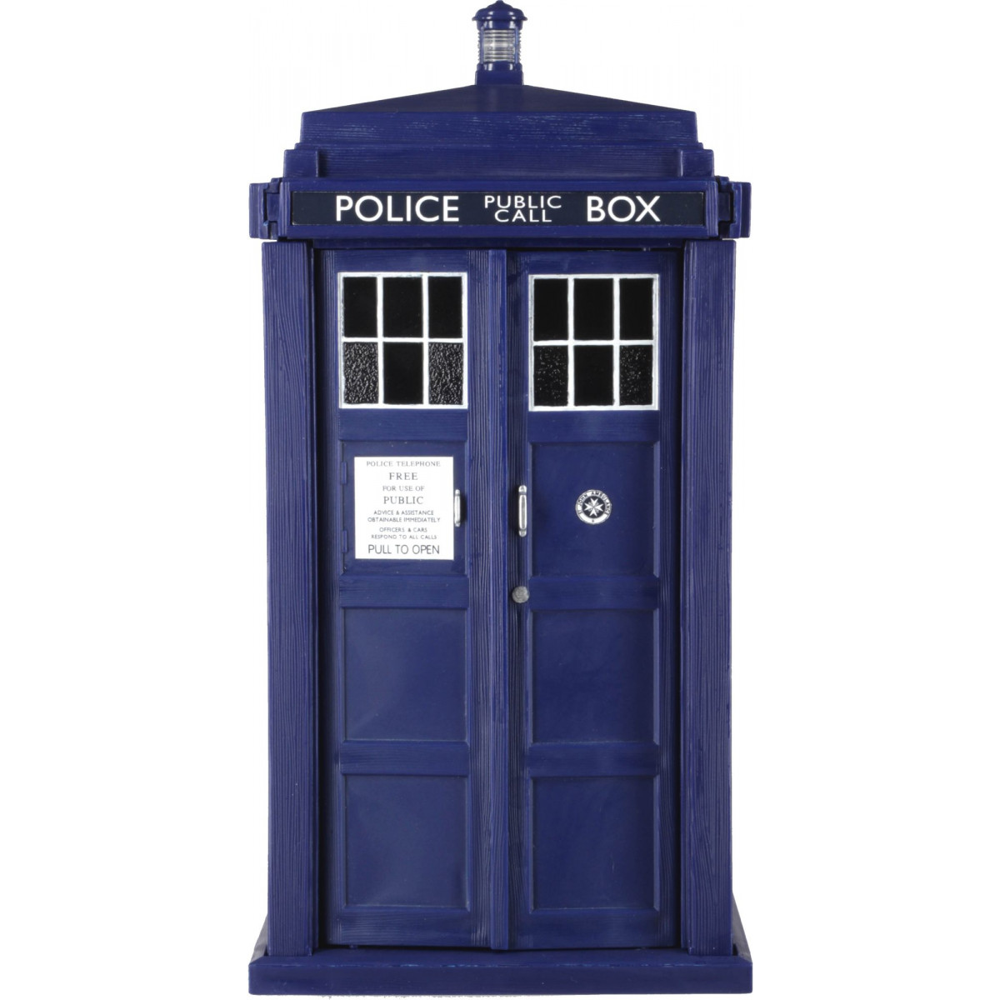

<!DOCTYPE html>
<html>

  <head>
    <meta charset="utf-8">
    <title>StopWatch</title>

    <script src="../lib/react.js"></script>
    <script src="../lib/react-dom.js"></script>
    <script src="../lib/babel.min.js"></script>

    <!-- calling bootstrap to add some styling -->
    <link rel="stylesheet" href="https://maxcdn.bootstrapcdn.com/bootstrap/3.3.7/css/bootstrap.min.css" integrity="sha384-BVYiiSIFeK1dGmJRAkycuHAHRg32OmUcww7on3RYdg4Va+PmSTsz/K68vbdEjh4u" crossorigin="anonymous">
    <link rel="stylesheet" href="../css/styles.css">
    <link rel="stylesheet" href="../css/stopwatch.css">
  </head>

  <body>

    <div id="app"></div>

    <script type="text/babel">
        
        var StopWatch = React.createClass({
          getInitialState() {
            return {
              time: 0,
              mins: 0,
              secs: 0,
              tenths: 0,
              isRunning: 0
            }
          },

          componentWillMount() {
            this.timeout;
          },

          shouldComponentUpdate() {
            return this.state.isRunning;
          },

          /*toggleStartPause() is the event handler for the Start/Stop button. It toggles the isRunning state and calls 
          incrementTime() to start timing if we are turning the stopwatch on. */
          toggleStartPause() {
            if(this.state.isRunning == 1) {
              clearTimeout(this.timeout);
              this.setState({isRunning: 0});
            }
            else {
              this.state.isRunning = 1;
              this.incrementTime();
              
            }
          },

          /* pad(n) takes a number, and displays a leading zero if it is less than 10. */
          pad(n) {
            return (n < 10) ? ("0" + n) : n;
          },

          /* incrementTime() uses a setTimeout() to periodically increment the time state. 
          There are calculations being done to split the incremented time to minutes, seconds, and miliseconds. */
          incrementTime() {
            if(this.state.isRunning == 1){
              var inc_time = this.state.time + 1
              this.timeout = setTimeout(() => {
              this.setState({time: inc_time});
              this.setState({mins: Math.floor(inc_time/10/60)});
              this.setState({secs: Math.floor(inc_time/10)});
              this.setState({tenths: (inc_time % 100)});
              {/*if (this.state.mins < 10) {
                this.setState({mins: 0 + this.state.mins});
              }
              if (this.state.secs < 10) {
                this.setState({secs : 0 + this.state.secs});
              }*/}
              this.incrementTime();

            }, 100)
            } else {
              return;
            }
          },
          /* reset() is the event handler for when the reset button is pressed. it sets everything to 0 and forces an update. */
          reset() {
            clearTimeout(this.timeout);
            this.setState({time: 0, isRunning: 0, mins: 0, secs: 0, tenths: 0});
            this.forceUpdate();

          },

          render() {
            var timed = this.state.time;
            var min = this.state.mins;
            var sec =  this.state.secs;
            var tenth = this.state.tenths;
            return (
              <div>
                <div className="row">
                  
                </div>
                <div className="row">
                  <div className="stopwatch">
                    <p className="stopwatch-display"> {this.pad(min)} : {this.pad(sec)} : {this.pad(tenth)} </p>
                    <button className="btn btn-primary" onClick={this.toggleStartPause}> Start/Stop </button>
                    <button className="btn btn-danger" onClick={this.reset}> Reset </button>
                  </div>
                </div>
                <h1> One Way Time Machine! </h1>
              </div>
            )
          }

        });
        ReactDOM.render(<StopWatch />, document.getElementById('app'));

      </script>

  </body>
</html>
